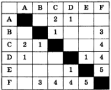
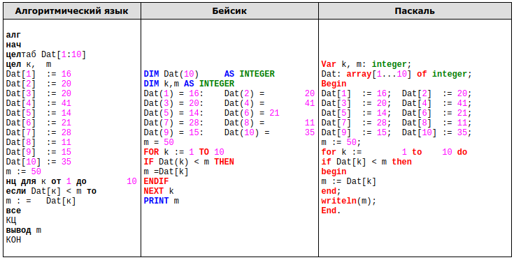
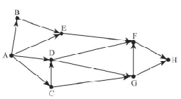
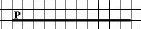
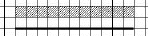

Задание 1
Статья, набранная на компьютере, содержит 32 страницы, на каждой странице 40 строк, в каждой строке 48 символов. Определите размер статьи в кодировке КОИ-8, в которой каждый символ кодируется 8 битами.
- 120 Кбайт
- 480 байт
- 960 байт
- 60 Kбайт
Задание 2
Для какого из приведённых чисел истинно высказывание:
НЕ (Первая цифра чётная) И (Последняя цифра нечётная)?
- 1234
- 6843
- 3561
- 4562
Задание 3
Между населёнными пунктами А, В, С, D, Е, F построены дороги, протяжённость которых приведена в таблице:

Определите длину кратчайшего пути между пунктами А и F (при условии, что передвигаться можно только по построенным дорогам).
- 5
- 7
- 3
- 9
Задание 4
Пользователь работал с каталогом Девочки. Сначала он поднялся на один уровень вверх, затем спустился на один уровень вниз, потом ещё раз спустился на один уровень вниз. В результате он оказался в каталоге
С:\Школа\Ученики\9класс.
Запишите полный путь каталога, с которым пользователь начинал работу.
- С:\Школа\Ученики\9класс\Девочки
- С:\Школа\Девочки\9класс
- С:\Школа\9класс\Девочки
- С:\Школа\Девочки
Задание 5
Дан фрагмент электронной таблицы:
| A | B | C | D | |
|---|---|---|---|---|
| 1 | 5 | 2 | 1 | 3 |
| 2 | =В1/2+3 | =А1*3 | =D1+C1 |
Какая из формул, приведённых ниже, может быть записана в ячейке B2, чтобы построенная после выполнения вычислений диаграмма по значениям диапазона ячеек A2:D2 соответствовала рисунку?
- =В1*2
- =В1*7+С1
- =A1+D1
- =В1*6+1
Задание 6
Исполнитель Черепашка перемещается на экране компьютера, оставляя след в виде линии. В каждый конкретный момент известно положение исполнителя и направление его движения. У исполнителя существует две команды: Вперёд n (где n — целое число), вызывающая передвижение Черепашки на n шагов в направлении движения; Направо m (где m — целое число), вызывающая изменение направления движения на m градусов по часовой стрелке. Запись Повтори k [Команда1 Команда2 КомандаЗ] означает, что последовательность команд в скобках повторится k раз.
Черепашке был дан для исполнения следующий алгоритм: Повтори 5 [Вперёд 80 Направо 90]. Какая фигура появится на экране?
- незамкнутая ломаная линия
- правильный девятиугольник
- правильный пятиугольник
- правильный четырёхугольник
Задание 7
Вася и Петя играли в шпионов и кодировали сообщения собственным шифром. Фрагмент кодовой таблицы приведён ниже:
| Ж | E | C | A | K | Л |
|---|---|---|---|---|---|
| +# | +^# | # | ^ | ^# | #+ |
Расшифруйте сообщение, если известно, что буквы в нём не повторяются:
#++^##^#^
Запишите в ответе расшифрованное сообщение.
Задание 8
В программе «:=» обозначает оператор присваивания, знаки «+», «-», «*» и «/» — соответственно операции сложения, вычитания, умножения и деления. Правила выполнения операций и порядок действий соответствуют правилам арифметики. Определите значение переменной a после выполнения алгоритма:
а := 10
b := 1
b := a/2*b
a := 2*а + 3*b
В ответе укажите одно целое число — значение переменной a.
Задание 9
Запишите значение переменной s, полученное в результате работы следующей программы. Текст программы приведён на трёх языках программирования.
| Алгоритмический язык | Бейсик | Паскаль |
|---|---|---|
алг нач цел s, k s := 0 нц для k от 6 до 12 s := s + 10 кц вывод s кон |
DIM k, s AS INTEGER s = 0 FOR к = 6 TO 12 s = s + 10 NEXT k PRINT s |
Var s,k: integer; Begin s := 0; for k := 6 to 12 do s := s + 10; Writeln(s); End. |
Задание10
В таблице Dat представлены данные о количестве голосов, поданных за 10 исполнителей народных песен (Dat[1] — количество голосов, поданных за первого исполнителя, Dat[2] — за второго и т. д.). Определите, какое число будет напечатано в результате работы следующей программы. Текст программы приведён на трёх языках программирования.

Задание 11
На рисунке изображена схема соединений, связывающих пункты А, В, С, D, Е, F, G, H. По каждому соединению можно двигаться только в одном направлении, указанном стрелкой. Сколько существует различных путей из пункта А в пункт H?

Задание 12
Ниже в табличной форме представлен фрагмент базы данных о результатах тестирования учащихся (используется стобалльная шкала).
| Фамилия | Пол | Математика | Химия | Информатика | Биология |
|---|---|---|---|---|---|
| Аганян | ж | 52 | 43 | 82 | 74 |
| Воронин | м | 92 | 75 | 93 | 55 |
| Григорчук | м | 66 | 69 | 51 | 68 |
| Роднина | ж | 73 | 51 | 40 | 92 |
| Сергеенко | ж | 81 | 83 | 83 | 41 |
| Черепанова | ж | 94 | 64 | 71 | 20 |
Сколько записей в данном фрагменте удовлетворяют условию
(Математика > 60) И (Информатика > 55)?
В ответе укажите одно число — искомое количество записей.
Задание 13
Переведите число 135 из десятичной системы счисления в двоичную систему счисления. Сколько единиц содержит полученное число? В ответе укажите одно число — количество единиц.
Задание 14
У исполнителя Умножатор две команды, которым присвоены номера:
1. умножь на 3
2. прибавь 2
Первая из них увеличивает число на экране в 3 раза, вторая — прибавляет к числу 2. Составьте алгоритм получения из числа 2 числа 66, содержащий не более 5 команд. В ответе запишите только номера команд. В ответе запишите только номера команд. (Например, 12212 — это алгоритм: умножь на 3, прибавь 2, прибавь 2, умножь на 3, прибавь 2, который преобразует число 2 в 32.) Если таких алгоритмов более одного, то запишите любой из них.
Задание 15
Файл размером 5000 Кбайт передаётся через некоторое соединение в течение 2 минут. Определите размер файла (в Кбайт), который можно передать через это соединение за 48 секунд. В ответе укажите одно число — размер файла в Кбайт. Единицы измерения писать не нужно.
Задание 16
Некоторый алгоритм из одной цепочки символов получает новую цепочку следующим образом. Сначала вычисляется длина исходной цепочки символов; если она нечётна, то удаляется последний символ цепочки, а если чётна, то в середину цепочки добавляется символ Б. В полученной цепочке символов каждая буква заменяется буквой, следующей за ней в русском алфавите (А — на Б, Б — на В и т. д., а Я — на А). Получившаяся таким образом цепочка является результатом работы алгоритма.
Например, если исходной была цепочка РУКА, то результатом работы алгоритма будет цепочка СФВЛБ, а если исходной была цепочка СОН, то результатом работы алгоритма будет цепочка ТП
Дана цепочка символов БРА. Какая цепочка символов получится, если к данной цепочке применить описанный алгоритм дважды (т. е. применить алгоритм к данной цепочке, а затем к результату вновь применить алгоритм)? Русский алфавит: АБВГДЕЁЖЗИЙКЛМНОПРСТУФХЦЧШЩЪЫЬЭЮЯ.
Задание 17
Доступ к файлу org.docx, находящемуся на сервере rez.ua, осуществляется по протоколу http. Фрагменты адреса файла закодированы буквами от А до Ж. Запишите последовательность этих букв, кодирующую адрес указанного файла в сети Интернет.
А) ua
Б) .docx
В) ://
Г) /
Д) rez.
Е) http
Ж) org
Задание 18
Приведены запросы к поисковому серверу. Для каждого запроса указан его код — соответствующая буква от А до Г. Расположите коды запросов слева направо в порядке возрастания количества страниц, которые нашёл поисковый сервер по каждому запросу. По всем запросам было найдено разное количество страниц. Для обозначения логической операции «ИЛИ» в запросе используется символ «|», а для логической операции «И» — символ «&».
| Код | Запрос |
| A | Есенин & Фет |
| Б | (Есенин & Фет) | Тютчев |
| В | Есенин & Фет & Тютчев |
| Г | Есенин | Фет | Тютчев |
Задание 19
В издательстве детских книг данные об изданных книгах хранятся в электронной таблице. Ниже приведены первые пять строк таблицы.
| A | B | C | D | |
|---|---|---|---|---|
| 1 | Автор | Название книги | Год создания произведения | Рейтинг книги |
| 2 | Агния Барто | Стихи для детей | 1925 | 316 |
| 3 | Алан Александр Милн | Винни-Пух | 1928 | 254 |
| 4 | Александр Волков | Волшебник Изумрудного города | 1939 | 1235 |
| 5 | Александр Пушкин | Руслан и Людмила | 1820 | 1472 |
| 6 | Александр Пушкин | Сказка о царе Салтане | 1831 | 900 |
Каждая строка таблицы содержит запись об одной книге. В столбце A записан автор книги; в столбце B — название книги; в столбце C — год создания произведения; в столбце D — рейтинг книги. Всего в электронную таблицу были занесены данные по 134 книгам в произвольном порядке.
Выполните задание.
Откройте файл с данной электронной таблицей. На основании данных, содержащихся в этой таблице, ответьте на два вопроса.
- Какое количество произведений написано позже 1930 года? Ответ на этот вопрос запишите в ячейку E2 таблицы.
- Какой процент книг, написанных ранее 1900 года, имеет рейтинг больше 1000? Ответ на этот вопрос с точностью не менее двух знаков после запятой запишите в ячейку E3 таблицы.
Задание 20
Выберите ОДНО из предложенных ниже заданий: 20.1 или 20.2.
20.1Исполнитель Робот умеет перемещаться по лабиринту, начерченному на плоскости, разбитой на клетки. Между соседними (по сторонам) клетками может стоять стена, через которую Робот пройти не может.
У Робота есть девять команд. Четыре команды — это команды-приказы:
вверх вниз влево вправо
При выполнении любой из этих команд Робот перемещается на одну клетку соответственно: вверх ↑ вниз ↓, влево ← , вправо →. Если Робот получит команду передвижения сквозь стену, то он разрушится.
Также у Робота есть команда закрасить, при которой закрашивается клетка, в которой Робот находится в настоящий момент.
Ещё четыре команды — это команды проверки условий. Эти команды проверяют, свободен ли путь для Робота в каждом из четырёх возможных направлений:
сверху свободно снизу свободно слева свободно справа свободно
Эти команды можно использовать вместе с условием «если», имеющим следующий вид:
если условие то
последовательность команд
все
Здесь условие — одна из команд проверки условия. Последовательность команд — это одна или несколько любых команд-приказов. Например, для передвижения на одну клетку вправо, если справа нет стенки, и закрашивания клетки можно использовать такой алгоритм:
если справа свободно то
вправо
закрасить
все
В одном условии можно использовать несколько команд проверки условий, применяя логические связки и, или, не, например:
если (справа свободно) и (не снизу свободно) то
вправо
все
Для повторения последовательности команд можно использовать цикл «пока», имеющий следующий вид:
нц пока условие
последовательность команд
кц
Например, для движения вправо, пока это возможно, можно использовать следующий алгоритм:
нц пока справа свободно
вправо
кц

Выполните задание.
На бесконечном поле имеется горизонтальная стена. Длина стены неизвестна. Робот находится сверху от стены в левом ее конце. На рисунке приведено расположение робота относительно стены (робот обозначен буквой «Р»):

Напишите алгоритм для робота, закрашивающий все клетки, расположенные выше стены на расстоянии одной пустой клетки от стены, независимо от длины стены. Робот должен закрасить только клетки, удовлетворяющие заданному условию. Например, для приведённого выше рисунка робот должен закрасить следующие клетки.
Конечное расположение Робота может быть произвольным. Алгоритм должен решать задачу для произвольного размера поля и любого допустимого расположения стен внутри прямоугольного поля. При исполнении алгоритма Робот не должен разрушиться. Алгоритм может быть выполнен в среде формального исполнителя или записан в текстовом редакторе.
20.2 Напишите программу, которая в последовательности натуральных чисел определяет максимальное число, оканчивающееся на 3. Программа получает на вход количество чисел в последовательности, а затем сами числа. В последовательности всегда имеется число, оканчивающееся на 3. Количество чисел не превышает 1000. Введённые числа не превышают 30 000. Программа должна вывести одно число — максимальное число, оканчивающееся на 3.
Пример работы программы:
| Входные данные | Выходные данные |
|---|---|
|
3 13 23 3 |
23 |